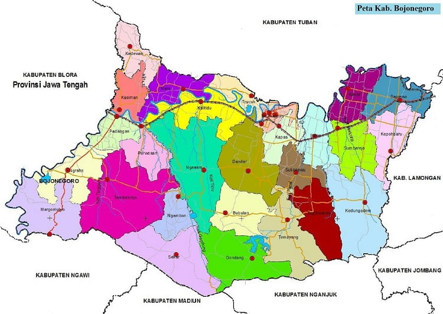

Bojonegoro
is a regency in East Java, Indonesia, about 110 km west of Surabaya. It is located in the inland part of northern Java plain, on the banks of the Solo River, the longest river in Java. It had a population of 1,209,973 at the 2010 Census and 1,301,635 at the 2020 Census, comprising 653,686 males and 647,949 females. The administrative centre of the regency is the town of Bojonegoro.
Previously known as a major producer of teak and tobacco, Bojonegoro is a focus of attention in Indonesia as a new oil field has been found in this area. This oil find is the biggest oil discovery in Indonesia in three decades and one of the biggest reserve in Indonesia.